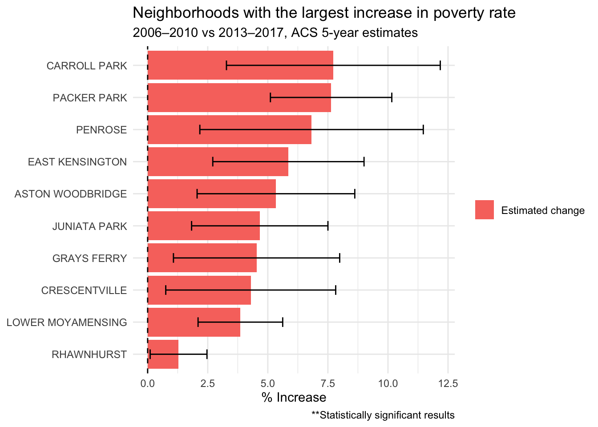
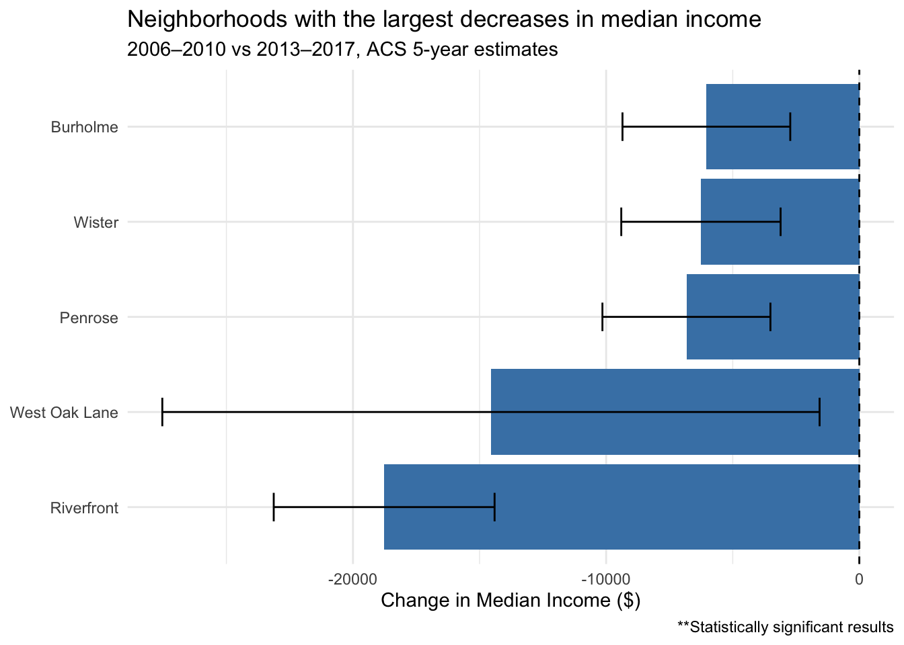

Here, I am going to explore the claims that were made by this article stating that white poverty has exploded and that poverty rates have disproportionately spiked in certain neighborhoods in Philadelphia between 2010 and 2017. The article relies on data from the 2006-2010 and the 2013-2017 5-Year American Community Survey’s (ACS) to draw these conclusions. To investigate this claim, I will look at estimated impoverished individuals, impoverished white individuals, white population, total population, and median income to establish whether or not these claims are overstated or statistically sound.
Establishing neighborhoods
Specifically, the article makes the argument that the Eastwick neighborhood in Philadelphia has experienced the highest increase in poverty rate compared to the rest of the city between 2010 and 2017. The article also makes the argument that the Holmesburg neighborhood has experienced a large increase in white poverty rates, jumping from 2% to 19%. The last claim is that the Tioga neighborhood experienced the largest drop in median income in the city. The article does not specifically outline which Census tracts make up individual neighborhoods, so I am going to rely on the OpenDataPhilly Neighborhood designation to best approximate comparisons between neighborhoods. For areas with no recorded population (8 Census tracts), I will remove them from the data.
Code
## Load neighborhoods shapefile ##neighborhoods <-read_sf("Academic Research/data/philadelphia-neighborhoods")# Join neighborhoods and census-tract data, assigning a tract to the neighborhood it shares the most overlap with ## Ensure same coordinate system and transform if needed #check_crs <-st_crs(neighborhoods)==st_crs(data2017)neighborhoods <-st_transform(neighborhoods, st_crs(data2017))neighborhoods <-st_make_valid(neighborhoods)# Find the intersection between neighborhood and tract data #neighborhoods_tracts2017 <-st_intersection(data2017, neighborhoods)neighborhoods_tracts2010 <-st_intersection(data2010, neighborhoods)# Assign tract to neighborhood they share most overlap with #neighborhoods_tracts2017$area_overlap <-st_area(neighborhoods_tracts2017)neighborhoods_tracts2010$area_overlap <-st_area(neighborhoods_tracts2010)data2017 <- neighborhoods_tracts2017 %>%group_by(GEOID) %>%slice_max(area_overlap)data2010 <- neighborhoods_tracts2010 %>%group_by(GEOID) %>%slice_max(area_overlap)
Analyzing poverty: Eastwick
First, I will look at how the poverty rate has changed between 2010 and 2017 in each neighborhood to determine if Eastwick experienced the highest increase in poverty rate.
There are 81 neighborhoods in Philadelphia that display having statistically distinguishable change in poverty rates from zero at a 90% confidence interval, whereas the remaining 58 neighborhoods did not display a statistically distinguishable change in poverty rates. This means that any observed change in poverty rates in those 58 neighborhoods could be due to sampling noise at a 90% confidence interval.
#| code-fold: true## Remove tracts with 0 population ##data2010 <- data2010 %>%filter(total_popE >0)data2017 <- data2017 %>%filter(total_popE >0)## Check for NAs in the data ###sum(is.na(data2010$povertyE))#sum(is.na(data2010$total_popE))## Compute poverty rate across neighborhoods ##data2010_poverty <- data2010 %>%rename("nhood_name"="NAME.1") %>%group_by(nhood_name) %>%# there is no reported MOE for total population so I assume it is 0 #summarise(neighborhood_total_poverty2010 =sum(povertyE),neighborhood_total_pop2010 =sum(total_popE),neighborhood_total_moe2010 =moe_sum(povertyM, povertyE)) %>%mutate(neighborhood_povertyshare2010 = neighborhood_total_poverty2010/neighborhood_total_pop2010,neighborhood_povertyshare_moe2010 =moe_prop(neighborhood_total_poverty2010, neighborhood_total_pop2010, neighborhood_total_moe2010, 0))data2017_poverty <- data2017 %>%rename("nhood_name"="NAME.1") %>%group_by(nhood_name) %>%# there is no reported MOE for total population so I assume it is 0 #summarise(neighborhood_total_poverty2017 =sum(povertyE),neighborhood_total_pop2017 =sum(total_popE),neighborhood_total_moe2017 =moe_sum(povertyM, povertyE)) %>%mutate(neighborhood_povertyshare2017 = neighborhood_total_poverty2017/neighborhood_total_pop2017,neighborhood_povertyshare_moe2017 =moe_prop(neighborhood_total_poverty2017, neighborhood_total_pop2017, neighborhood_total_moe2017, 0))## Join data compareyrs_poverty <- data2017_poverty %>% st_drop_geometry %>%left_join(data2010_poverty, by="nhood_name") %>%mutate(change = neighborhood_povertyshare2017 - neighborhood_povertyshare2010,se_1 = neighborhood_povertyshare_moe2010 /1.645,se_2 = neighborhood_povertyshare_moe2017 /1.645,se_diff =sqrt(se_1^2+ se_2^2),moe_diff = se_diff *1.645,z = change / se_diff,significant =abs(z) >1.645 )true_sig_poverty <- compareyrs_poverty %>%count(significant)## Check Eastwick ##eastwick <- compareyrs_poverty %>%arrange(desc(change))
## Create error bar plot ##compareyrs_poverty %>%filter(significant) %>%mutate(nhood_name =str_replace(nhood_name, "_", " ")) %>%arrange(desc(change)) %>%head(10) %>%ggplot(aes(x =reorder(nhood_name, change), y = change)) +geom_col(aes(fill ="Estimated change")) +geom_errorbar(aes(ymin = change - moe_diff,ymax = change + moe_diff), width =0.3) +geom_hline(yintercept =0, linetype ="dashed") +coord_flip() +theme_minimal() +labs(title ="Neighborhoods with the largest increase in poverty rate",subtitle ="2006–2010 vs 2013–2017, ACS 5-year estimates",x =NULL, y ="% Increase",fill =NULL, caption ="**Statistically significant results")

In exploring the claim that Eastwick has showed the greatest poverty rate increase of any community, it appears that other neighborhoods have emerged as experiencing greater rates of poverty. Namely, neighborhoods like Caroll Park, Packer Park, East Kensington, Aston Woodbridge, and Pennrose experience the sharpest increases in poverty at a rate statistically distinguishable from zero. Thus, based upon my analysis, the article’s claim that Eastwick experienced the highest increase in poverty rate out of any Philadelphia neighborhood is unsupported.
Analyzing white poverty: Holmesburg
Next, I will investigate the claim that white poverty rates have drastically increased in the Holmesburg neighborhood, from 2% to 19%.
#| code-fold: true## Compute poverty rate across neighborhoods ##data2010_whitepoverty <- data2010 %>%rename("nhood_name"="NAME.1") %>%group_by(nhood_name) %>%# there is no reported MOE for total population so I assume it is 0 #summarise(whiteneighborhood_total_poverty2010 =sum(white_povertyE),whiteneighborhood_total_pop2010 =sum(white_popE),whiteneighborhood_poverty_moe2010 =moe_sum(white_povertyM, white_povertyE),whiteneighborhood_pop_moe2010 =moe_sum(white_popM, white_popE)) %>%mutate(whiteneighborhood_povertyshare2010 = whiteneighborhood_total_poverty2010/whiteneighborhood_total_pop2010,whiteneighborhood_povertyshare_moe2010 =moe_prop(whiteneighborhood_total_poverty2010, whiteneighborhood_total_pop2010, whiteneighborhood_poverty_moe2010, whiteneighborhood_pop_moe2010))data2017_whitepoverty <- data2017 %>%rename("nhood_name"="NAME.1") %>%group_by(nhood_name) %>%# there is no reported MOE for total population so I assume it is 0 #summarise(whiteneighborhood_total_poverty2017 =sum(white_povertyE),whiteneighborhood_total_pop2017 =sum(white_popE),whiteneighborhood_poverty_moe2017 =moe_sum(white_povertyM, white_povertyE),whiteneighborhood_pop_moe2017 =moe_sum(white_popM, white_popE)) %>%mutate(whiteneighborhood_povertyshare2017 = whiteneighborhood_total_poverty2017/whiteneighborhood_total_pop2017,whiteneighborhood_povertyshare_moe2017 =moe_prop(whiteneighborhood_total_poverty2017, whiteneighborhood_total_pop2017, whiteneighborhood_poverty_moe2017, whiteneighborhood_pop_moe2017))## Join data compareyrs_whitepoverty <- data2017_whitepoverty %>% st_drop_geometry %>%left_join(data2010_whitepoverty, by="nhood_name") %>%mutate(change = whiteneighborhood_povertyshare2017 - whiteneighborhood_povertyshare2010,se_1 = whiteneighborhood_povertyshare_moe2010 /1.645,se_2 = whiteneighborhood_povertyshare_moe2017 /1.645,se_diff =sqrt(se_1^2+ se_2^2),moe_diff = se_diff *1.645,z = change / se_diff,significant =abs(z) >1.645 )true_sig_poverty <- compareyrs_whitepoverty %>%count(significant)## Check Holmesburg ##holmesburg <- compareyrs_whitepoverty %>%filter(nhood_name =="HOLMESBURG")
Only 37 neighborhoods in Philadelphia display having statistically distinguishable changes in white poverty rates from zero at a 90% confidence interval, whereas the remaining 102 neighborhoods do not. This makes sense given the fact that white poverty estimates is a cross-tabs table and likely has a smaller sample size, decreasing its reliability. Below is a table displaying the estimated change in white poverty rates and estimated white poverty rate as of 2017. Holmesburg is not within the top ten neighborhoods with the highest estimated change in white poverty. That being said, Holmesburg did experience an approximately 9.7% increase in white poverty rates at a somewhat reliable level. Although this is not as extreme as the claim that white poverty rates have increased by 17% percentage points, it is true that it did increase in Holmesburg. This claim cannot be determined.
In the last step, I will investigate the claim that the Tioga neighborhood experienced the greatest decrease in median income. Specifically, the article notes that the median income plummeted from $28,026 to $17,493.
My analysis finds that only 48 neighborhoods show having statistically distinguishable changes in median income from zero at a 90% confidence interval, whereas the remaining 89 neighborhoods do not. When looking at the top five neighborhoods with the largest statistically significant decrease in median income, neither Nicetown or Tioga make the list. Instead, Burholme, Wister, Penrose, West Oak Lane, and Riverfront see the largest decreases in median income.
When looking at Tioga specifically there is only an estimated $774 decrease in median income, in which this is not a statistically significant difference. The evidence suggests that the claim that Tioga experienced the largest decrease in median income is largely unsupported.
## Create another error bar plot ##compareyrs_income %>%filter(significant) %>%mutate(nhood_name =str_replace(nhood_name, "_", " ")) %>%arrange(change) %>%head(5) %>%ggplot(aes(x =reorder(nhood_name, change), y = change)) +geom_col(aes(fill ="Estimated change"), fill ="steelblue") +geom_errorbar(aes(ymin = change - moe_diff,ymax = change + moe_diff), width =0.3) +geom_hline(yintercept =0, linetype ="dashed") +coord_flip() +theme_minimal() +labs(title ="Neighborhoods with the largest decreases in median income",subtitle ="2006–2010 vs 2013–2017, ACS 5-year estimates",x =NULL, y ="Change in Median Income ($)",fill =NULL, caption ="**Statistically significant results")

Rewriting the Central Paragraph
Many North and West Philadelphia neighborhoods experience disproportionately higher rates of poverty and suffer from glaring income disparities compared to Philadelphia at large. With the new release of the 2013-2017 American Community Survey (ACS) estimates, this new data release will shed light on the economic disparities present within Philadelphia neighborhoods. For example:
Riverfront experienced the largest decreases in median household income in Philadelphia, with an approximate median household income loss of over $15,000
Holmesburg experienced an increase in white poverty rates of approximately 9.7% percentage points, though this measure is only somewhat reliable
Carroll Park, Packer Park, and Penrose experienced the highest estimated increase in poverty rates compared to other Philadelphia neighborhoods
Source Code
```{r}#| include: falselibrary(tidycensus)library(tidyverse)library(dplyr)library(ggplot2)library(gt)```---## Getting started ##Here, I am going to explore the claims that were made by [this article](https://whyy.org/articles/new-census-figures-on-philly-neighborhoods-show-inequality-high-numbers-of-whites-living-in-poverty/) stating that white poverty has exploded and that poverty rates have disproportionately spiked in certain neighborhoods in Philadelphia between 2010 and 2017. The article relies on data from the 2006-2010 and the 2013-2017 5-Year American Community Survey's (ACS) to draw these conclusions. To investigate this claim, I will look at estimated impoverished individuals, impoverished white individuals, white population, total population, and median income to establish whether or not these claims are overstated or statistically sound. ```{r}#| include: false## Exploring variables provided in the 2006-2010 and 2013-2017 ACS ##acs2010_vars <-load_variables(year =2010, "acs5") acs2017_vars <-load_variables(year =2017, "acs5")## Pulling poverty, white poverty, income, and population variables from each year ##data2010 <-get_acs(geography ="tract", variables =c(poverty ="B17021_001",total_pop ="B00001_001",white_poverty ="B17001A_002",white_pop ="B02001_002",median_income ="B06011_001"),state ="PA",county ="Philadelphia",year =2010, survey ="acs5", output ="wide",geometry =TRUE)data2017 <-get_acs(geography ="tract", variables =c(poverty ="B17021_001",total_pop ="B00001_001",white_poverty ="B17001A_002",white_pop ="B02001_002",median_income ="B06011_001" ),state ="PA",county="Philadelphia",year =2017, survey ="acs5", output ="wide", geometry =TRUE)```## Establishing neighborhoods ##Specifically, the article makes the argument that the Eastwick neighborhood in Philadelphia has experienced the highest increase in poverty rate compared to the rest of the city between 2010 and 2017. The article also makes the argument that the Holmesburg neighborhood has experienced a large increase in white poverty rates, jumping from 2% to 19%. The last claim is that the Tioga neighborhood experienced the largest drop in median income in the city. The article does not specifically outline which Census tracts make up individual neighborhoods, so I am going to rely on the [OpenDataPhilly Neighborhood designation](https://opendataphilly.org/datasets/philadelphia-neighborhoods/) to best approximate comparisons between neighborhoods. For areas with no recorded population (8 Census tracts), I will remove them from the data.```{r}#| include: false## Download additional packages ##library(sf)library(rio)``````{r}#| code-fold: true## Load neighborhoods shapefile ##neighborhoods <-read_sf("Academic Research/data/philadelphia-neighborhoods")# Join neighborhoods and census-tract data, assigning a tract to the neighborhood it shares the most overlap with ## Ensure same coordinate system and transform if needed #check_crs <-st_crs(neighborhoods)==st_crs(data2017)neighborhoods <-st_transform(neighborhoods, st_crs(data2017))neighborhoods <-st_make_valid(neighborhoods)# Find the intersection between neighborhood and tract data #neighborhoods_tracts2017 <-st_intersection(data2017, neighborhoods)neighborhoods_tracts2010 <-st_intersection(data2010, neighborhoods)# Assign tract to neighborhood they share most overlap with #neighborhoods_tracts2017$area_overlap <-st_area(neighborhoods_tracts2017)neighborhoods_tracts2010$area_overlap <-st_area(neighborhoods_tracts2010)data2017 <- neighborhoods_tracts2017 %>%group_by(GEOID) %>%slice_max(area_overlap)data2010 <- neighborhoods_tracts2010 %>%group_by(GEOID) %>%slice_max(area_overlap)```## Analyzing poverty: Eastwick ##First, I will look at how the poverty rate has changed between 2010 and 2017 in each neighborhood to determine if Eastwick experienced the highest increase in poverty rate. There are 81 neighborhoods in Philadelphia that display having statistically distinguishable change in poverty rates from zero at a 90% confidence interval, whereas the remaining 58 neighborhoods did not display a statistically distinguishable change in poverty rates. This means that any observed change in poverty rates in those 58 neighborhoods could be due to sampling noise at a 90% confidence interval. ```{r}#| code-fold: true## Remove tracts with 0 population ##data2010 <- data2010 %>%filter(total_popE >0)data2017 <- data2017 %>%filter(total_popE >0)## Check for NAs in the data ###sum(is.na(data2010$povertyE))#sum(is.na(data2010$total_popE))## Compute poverty rate across neighborhoods ##data2010_poverty <- data2010 %>%rename("nhood_name"="NAME.1") %>%group_by(nhood_name) %>%# there is no reported MOE for total population so I assume it is 0 #summarise(neighborhood_total_poverty2010 =sum(povertyE),neighborhood_total_pop2010 =sum(total_popE),neighborhood_total_moe2010 =moe_sum(povertyM, povertyE)) %>%mutate(neighborhood_povertyshare2010 = neighborhood_total_poverty2010/neighborhood_total_pop2010,neighborhood_povertyshare_moe2010 =moe_prop(neighborhood_total_poverty2010, neighborhood_total_pop2010, neighborhood_total_moe2010, 0))data2017_poverty <- data2017 %>%rename("nhood_name"="NAME.1") %>%group_by(nhood_name) %>%# there is no reported MOE for total population so I assume it is 0 #summarise(neighborhood_total_poverty2017 =sum(povertyE),neighborhood_total_pop2017 =sum(total_popE),neighborhood_total_moe2017 =moe_sum(povertyM, povertyE)) %>%mutate(neighborhood_povertyshare2017 = neighborhood_total_poverty2017/neighborhood_total_pop2017,neighborhood_povertyshare_moe2017 =moe_prop(neighborhood_total_poverty2017, neighborhood_total_pop2017, neighborhood_total_moe2017, 0))## Join data compareyrs_poverty <- data2017_poverty %>% st_drop_geometry %>%left_join(data2010_poverty, by="nhood_name") %>%mutate(change = neighborhood_povertyshare2017 - neighborhood_povertyshare2010,se_1 = neighborhood_povertyshare_moe2010 /1.645,se_2 = neighborhood_povertyshare_moe2017 /1.645,se_diff =sqrt(se_1^2+ se_2^2),moe_diff = se_diff *1.645,z = change / se_diff,significant =abs(z) >1.645 )true_sig_poverty <- compareyrs_poverty %>%count(significant)## Check Eastwick ##eastwick <- compareyrs_poverty %>%arrange(desc(change))``````{r, echo = TRUE}## Create error bar plot ##compareyrs_poverty %>% filter(significant) %>% mutate(nhood_name = str_replace(nhood_name, "_", " ")) %>% arrange(desc(change)) %>% head(10) %>% ggplot(aes(x = reorder(nhood_name, change), y = change)) + geom_col(aes(fill = "Estimated change")) + geom_errorbar(aes(ymin = change - moe_diff, ymax = change + moe_diff), width = 0.3) + geom_hline(yintercept = 0, linetype = "dashed") + coord_flip() + theme_minimal() + labs(title = "Neighborhoods with the largest increase in poverty rate", subtitle = "2006–2010 vs 2013–2017, ACS 5-year estimates", x = NULL, y = "% Increase", fill = NULL, caption = "**Statistically significant results")```In exploring the claim that Eastwick has showed the greatest poverty rate increase of any community, it appears that other neighborhoods have emerged as experiencing greater rates of poverty. Namely, neighborhoods like Caroll Park, Packer Park, East Kensington, Aston Woodbridge, and Pennrose experience the sharpest increases in poverty at a rate statistically distinguishable from zero. Thus, based upon my analysis, the article's claim that Eastwick experienced the highest increase in poverty rate out of any Philadelphia neighborhood is **unsupported**. ## Analyzing white poverty: Holmesburg ##Next, I will investigate the claim that white poverty rates have drastically increased in the Holmesburg neighborhood, from 2% to 19%.```{r}#| code-fold: true## Compute poverty rate across neighborhoods ##data2010_whitepoverty <- data2010 %>%rename("nhood_name"="NAME.1") %>%group_by(nhood_name) %>%# there is no reported MOE for total population so I assume it is 0 #summarise(whiteneighborhood_total_poverty2010 =sum(white_povertyE),whiteneighborhood_total_pop2010 =sum(white_popE),whiteneighborhood_poverty_moe2010 =moe_sum(white_povertyM, white_povertyE),whiteneighborhood_pop_moe2010 =moe_sum(white_popM, white_popE)) %>%mutate(whiteneighborhood_povertyshare2010 = whiteneighborhood_total_poverty2010/whiteneighborhood_total_pop2010,whiteneighborhood_povertyshare_moe2010 =moe_prop(whiteneighborhood_total_poverty2010, whiteneighborhood_total_pop2010, whiteneighborhood_poverty_moe2010, whiteneighborhood_pop_moe2010))data2017_whitepoverty <- data2017 %>%rename("nhood_name"="NAME.1") %>%group_by(nhood_name) %>%# there is no reported MOE for total population so I assume it is 0 #summarise(whiteneighborhood_total_poverty2017 =sum(white_povertyE),whiteneighborhood_total_pop2017 =sum(white_popE),whiteneighborhood_poverty_moe2017 =moe_sum(white_povertyM, white_povertyE),whiteneighborhood_pop_moe2017 =moe_sum(white_popM, white_popE)) %>%mutate(whiteneighborhood_povertyshare2017 = whiteneighborhood_total_poverty2017/whiteneighborhood_total_pop2017,whiteneighborhood_povertyshare_moe2017 =moe_prop(whiteneighborhood_total_poverty2017, whiteneighborhood_total_pop2017, whiteneighborhood_poverty_moe2017, whiteneighborhood_pop_moe2017))## Join data compareyrs_whitepoverty <- data2017_whitepoverty %>% st_drop_geometry %>%left_join(data2010_whitepoverty, by="nhood_name") %>%mutate(change = whiteneighborhood_povertyshare2017 - whiteneighborhood_povertyshare2010,se_1 = whiteneighborhood_povertyshare_moe2010 /1.645,se_2 = whiteneighborhood_povertyshare_moe2017 /1.645,se_diff =sqrt(se_1^2+ se_2^2),moe_diff = se_diff *1.645,z = change / se_diff,significant =abs(z) >1.645 )true_sig_poverty <- compareyrs_whitepoverty %>%count(significant)## Check Holmesburg ##holmesburg <- compareyrs_whitepoverty %>%filter(nhood_name =="HOLMESBURG")```Only 37 neighborhoods in Philadelphia display having statistically distinguishable changes in white poverty rates from zero at a 90% confidence interval, whereas the remaining 102 neighborhoods do not. This makes sense given the fact that white poverty estimates is a cross-tabs table and likely has a smaller sample size, decreasing its reliability. Below is a table displaying the estimated change in white poverty rates and estimated white poverty rate as of 2017. Holmesburg is not within the top ten neighborhoods with the highest estimated change in white poverty. That being said, Holmesburg did experience an approximately 9.7% increase in white poverty rates at a somewhat reliable level. Although this is not as extreme as the claim that white poverty rates have increased by 17% percentage points, it is true that it did increase in Holmesburg. This claim **cannot be determined**.```{r, echo= TRUE}reliability_table <- compareyrs_whitepoverty %>% mutate( cv = (whiteneighborhood_povertyshare_moe2017 / 1.645) / whiteneighborhood_povertyshare2017 * 100, dot = case_when( cv < 12 ~ "🟢", cv <= 40 ~ "🟡", TRUE ~ "🔴" ), flag = case_when( cv < 12 ~ "Reliable", cv <= 40 ~ "Somewhat reliable", TRUE ~ "Unreliable" ), nhood_name = str_replace(nhood_name, "_", " ") ) %>% arrange(desc(change)) %>% select(dot, nhood_name, change, whiteneighborhood_povertyshare2017, whiteneighborhood_povertyshare_moe2017, cv, flag) %>% filter(nhood_name == "HOLMESBURG")reliability_table %>% gt() %>% fmt_number(columns = c(whiteneighborhood_povertyshare2017, whiteneighborhood_povertyshare_moe2017), decimals = 2) %>% fmt_number(columns = cv, decimals = 1) %>% cols_label( dot = "", nhood_name = "Neighborhood", whiteneighborhood_povertyshare2017 = "Estimated White Poverty Rate ", change = "Change in White Poverty Rate", whiteneighborhood_povertyshare_moe2017 = "MOE", cv = "CV (%)", flag = "Reliability" ) %>% cols_align(align = "center", columns = dot) %>% tab_header( title = "Estimated increase in white poverty rate", subtitle = "Holmesburg, Philadelphia, ACS 2017 5-year estimates" ) %>% tab_source_note( "Reliability thresholds follow Jurjevich et al. (2018): CV < 12% reliable, 12–40% somewhat reliable, > 40% unreliable." )```## Analyzing median income: Tioga ##In the last step, I will investigate the claim that the Tioga neighborhood experienced the greatest decrease in median income. Specifically, the article notes that the median income plummeted from \$28,026 to \$17,493.```{r}#| code-fold: true## Compute income change across neighborhoods ##compareyrs_income <- data2017 %>% st_drop_geometry %>%left_join(data2010, by="GEOID") %>%rename(median_incomeE2017 ="median_incomeE.x",median_incomeM2017 ="median_incomeM.x",median_incomeE2010 ="median_incomeE.y",median_incomeM2010 ="median_incomeM.y",nhood_name ="MAPNAME.x") %>%group_by(nhood_name) %>%summarise(median_incomeE2017 =sum(median_incomeE2017),median_incomeM2017 =moe_sum(median_incomeM2017, median_incomeE2017),median_incomeE2010 =sum(median_incomeE2010),median_incomeM2010 =moe_sum(median_incomeM2017, median_incomeE2010)) %>%mutate(change = median_incomeE2017 - median_incomeE2010,se_1 = median_incomeM2010 /1.645,se_2 = median_incomeM2017 /1.645,se_diff =sqrt(se_1^2+ se_2^2),moe_diff = se_diff *1.645,z = change / se_diff,significant =abs(z) >1.645 )true_sig_poverty <- compareyrs_income %>%count(significant)## check Nicetown-Tiogal ##nicetown_tioga <- compareyrs_income %>%filter(nhood_name =="Tioga")```My analysis finds that only 48 neighborhoods show having statistically distinguishable changes in median income from zero at a 90% confidence interval, whereas the remaining 89 neighborhoods do not. When looking at the top five neighborhoods with the largest statistically significant decrease in median income, neither Nicetown or Tioga make the list. Instead, Burholme, Wister, Penrose, West Oak Lane, and Riverfront see the largest decreases in median income. When looking at Tioga specifically there is only an estimated $774 decrease in median income, in which this is not a statistically significant difference. The evidence suggests that the claim that Tioga experienced the largest decrease in median income is largely **unsupported**.```{r, echo = TRUE}## Create another error bar plot ##compareyrs_income %>% filter(significant) %>% mutate(nhood_name = str_replace(nhood_name, "_", " ")) %>% arrange(change) %>% head(5) %>% ggplot(aes(x = reorder(nhood_name, change), y = change)) + geom_col(aes(fill = "Estimated change"), fill = "steelblue") + geom_errorbar(aes(ymin = change - moe_diff, ymax = change + moe_diff), width = 0.3) + geom_hline(yintercept = 0, linetype = "dashed") + coord_flip() + theme_minimal() + labs(title = "Neighborhoods with the largest decreases in median income", subtitle = "2006–2010 vs 2013–2017, ACS 5-year estimates", x = NULL, y = "Change in Median Income ($)", fill = NULL, caption = "**Statistically significant results")```## Rewriting the Central Paragraph ##Many North and West Philadelphia neighborhoods experience disproportionately higher rates of poverty and suffer from glaring income disparities compared to Philadelphia at large. With the new release of the 2013-2017 American Community Survey (ACS) estimates, this new data release will shed light on the economic disparities present within Philadelphia neighborhoods. For example: * Riverfront experienced the largest decreases in median household income in Philadelphia, with an approximate median household income loss of over $15,000* Holmesburg experienced an increase in white poverty rates of approximately 9.7% percentage points, though this measure is only somewhat reliable* Carroll Park, Packer Park, and Penrose experienced the highest estimated increase in poverty rates compared to other Philadelphia neighborhoods